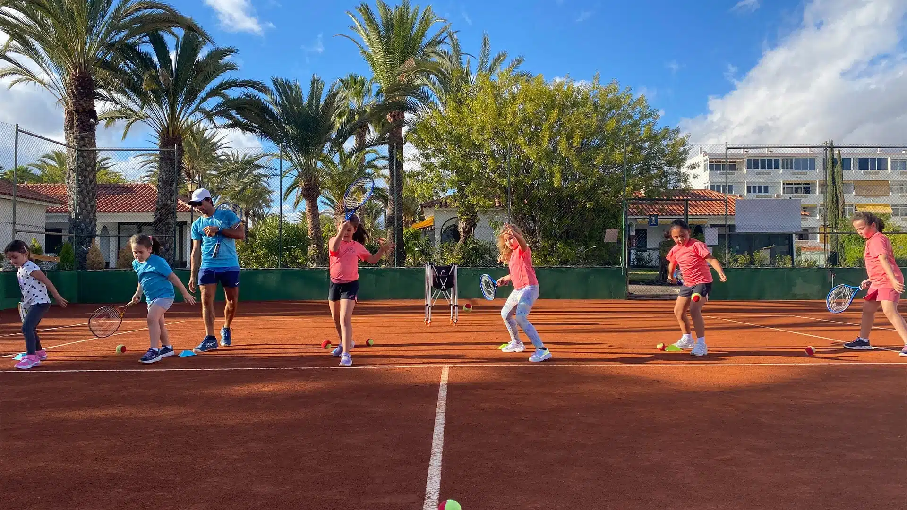

Clay & Line (clay-court-graphic)
The page is the court seen from above: real clay red, white court lines as the layout grid, one ball-yellow accent. The subject is literal, so the red is earned, not a default.
Jugar al tenis los 365 días del año
"Bienvenidos a una experiencia de tenis única." (site)
Palette
dominant
text / rules
accent, CTA only
text on light
surface
White-on-clay 4.82:1 (body). Ink-on-clay 3.18:1 so ink is not used on clay. Ink-on-ball 10.27:1.
Type
Display: Archivo Expanded ExtraBold (Google Fonts), uppercase, tight. Body: Archivo Regular. Reads like scoreboard and court signage; suits a coach-led academy, not a resort.
Hero and sections
Signature motion
Court lines draw themselves on load (SVG stroke, ~1.2s), revealing the grid; a yellow ball bounces once and lands on the CTA. Reduced motion: lines already drawn, ball static on the CTA.
Imagery
Full-colour real photos, cropped tight to the line; site-19 (kids on clay) as hero, site-20 (empty court, palms) as a wide band.
References

Photo used as-is; layout cues taken from court geometry, not from any site.
Registry check: clear (Archivo · #B4472B · sports-academy) · Critic: PASS (round 2)